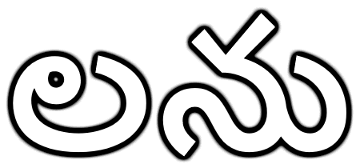

Willkommen bei LaNu

Home
Informatik
RAU
Lernende
Bewerbungstipps
RAU
Das RAU nimmt die klassische Rolle als Partner der Lehrbetriebe für die Grund und Ergänzungsbildung wahr seit 1998. Im RAU werden verschiedene Berufsgruppen ausgebildet: Mechanik, Konstruktion, Elektronik, Informatik und Wirtschaft
Basislehrjahr
Im Basislehrjahr lernt man alle Grundlagen zum Beruf, dazu hat man im ersten Jahr schon fast alle ÜK Module abgeschlossen. Das Basislehrjahr kann man in einem Ausbildungszentrum besuchen. Mit dem Basislehrjahr erweitert man seine Kompetenzen und wir bereit für den Alltag im Betrieb.
Modulbaukasten
Die Lehre als Informatiker ist mittels eines sogenannten Modulbaukasten aufgebaut. Der Modulbaukasten einer Fachrichtung besteht aus einer Auswahl von Modulen. Die Module handeln jeweils von einem Thema der Informatik und überschneiden sich teilweise Thematisch und/oder bauen auf anderen Modulen auf. Je nach Fachrichtung unterscheidet sich die Auswahl der Module signifikant. Manche der Module kommen aber auch in mehreren Fachrichtungen vor. Die Modulnummer (Modul I-CH) dient als einzigartiger Identifikator des Moduls.
Modulbaukasten Applikationsentwicklung
Modulbaukasten Systemtechnik
Modulbaukasten Betriebsinformatik